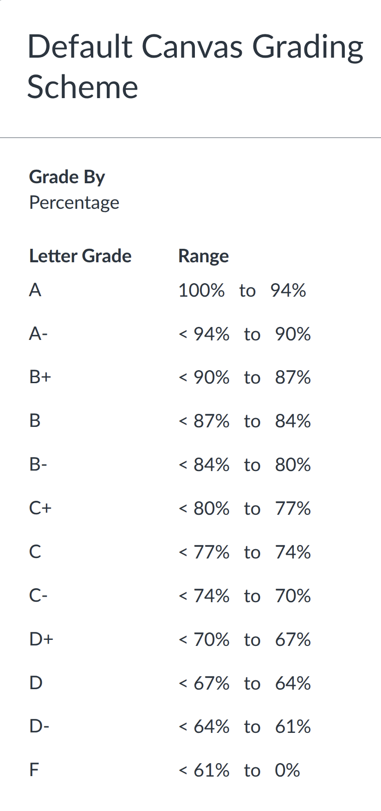

Syllabus#
Logistics#
Course name: MATH-693B
Course term: Spring 2026
Class time: T-Th: 9:30 AM - 10:45 AM
Mode of delivery: in person
Location: GMCS 328
Instructor: Valeria Barra#
Pronouns: (she/her/hers)
Email: vbarra [at] sdsu [dot] edu
Office location: announced on the course Canvas page
Office Hours: announced on the course Canvas page or by appointment.
Tip
Office hours are an important time for asking questions, solving problems, discussing broader academic and career strategies, and providing feedback so I can make the class serve your needs and those of people with similar experiences and interests.
Overview#
Partial differential equations (PDEs) can describe the behavior of fluids, structures, heat transfer, wave propagation, and other physical phenomena of scientific and engineering interest. Broadly speaking, they describe how an object (or system) moves in time and space.
This course covers discretization of PDEs using finite difference and collocation methods, finite volume methods, and finite element methods for elliptic, parabolic, and hyperbolic equations. It covers fundamental concepts such as conditioning, convergence, and numerical stability.
For each method, we will discuss boundary conditions, generalization to high order, robustness, and geometric complexity.
We will discuss foundational principles like well posedness, verification, and validation, as well as efficient methods for solution of the discretized equations and implementation in extensible software.
Organization and course design#
We will start with an introduction on version control software and reproducibility in science. Then we will give a brief refresher on approximation of functions in finite arithmetic, and numerical differentiation. We will give an introduction of some foundational numerical analysis concepts.
We will extend this to finite difference methods for elliptic problems (like heat and pressure equilibrium) and time integration, producing methods that converge with arbitrarily high orders of accuracy.
We will discover challenges when applying these methods to hyperbolic equations (which describe wave propagation and transport phenomena), especially nonlinear hyperbolic equations, and thus develop finite volume methods which rely on weaker assumptions. We will learn about shocks, rarefactions, and Riemann solvers.
Finite volume methods are easy to use in complicated geometries and/or unstructured meshes, but achieving high order accuracy in such settings is unnatural and the methods can be awkward for elliptic and parabolic equations.
Finite element methods offer a flexible and robust analysis framework as well as modular implementation that allows arbitrary order of accuracy even in complicated domains.
In the second half of the semester, we will add more project-based learning. You will choose an open-source software library/package with an active community, identify opportunities for contribution, provide your individual contribution to the community, give a presentation to the class about the choice of methods, stakeholders and community functioning, and write a final report. Such contributions can take many different shapes, and need not necessarily involve code (more on this later).
Student Learning Outcomes#
Upon completing this course, students will be able to
contribute to collaborative software with the use of version control systems, such as
gitformulate problems in science and engineering in terms of PDEs
evaluate the accuracy and performance of algorithms
understand the merits and limitations of the leading numerical methods used to solve PDEs
diagnose ill-conditioned problem formulations and unstable algorithms
develop effective numerical software, taking into account stability, accuracy, and cost
develop different numerical methods: finite differences, finite volume, finite elements, and compatible discretizations
communicate about the above using figures, numerical experiments, writing, and presentation
search for and understand relevant literature and documentation
interpret research papers
Expectations#
Enter with a growth mindset, practice adaptive coping, and nurture your intrinsic motivation
Attend class (in-person) and participate in discussions
Make an honest attempt at activities, projects, etc.
Interact with the class notebooks and read reference material
Individual or group projects

Assessment, grading policy and schedule#
This class will have some assignments and projects (midterm and final). The final projects can be individual or group projects (depending on the number of students registered) and will be agreed upon with the instructor. There will be a midterm and a final oral presentation for each project. Moreover, a final report must be delivered. Instructions about what is expected for both midterm and final presentations as well as for the final report will be provided.
Grading breakdown:
Participation (can include engagement in class, attendance, use of office hours, etc) (5%)
Assignment 1 (5%): due date Tuesday, 02/03/26, by midnight (AOE)
Assignment 2 (8%): due date Friday, 02/20/26, by midnight (AOE)
Assignment 3 (8%): due date TBD, by midnight (AOE)
Assignment 4 (8%): due date TBD, by midnight (AOE)
Assignment 5 (8%): due date TBD, by midnight (AOE)
Assignment 6 (8%): due date TBD, by midnight (AOE)
AOE: Anywhere on Earth time zone. This time zone is 12 hours behind Coordinated Universal Time (UTC) and typically used for online submissions to accommodate people from different time zones. Given that this course is taught in person in the Pacific standard time, I use this not really to facilitate submissions from different time zones, but to allow people not to worry about submitting by midnight sharp. This does not mean that I encourage people working late. I actually advocate for a healthy work/life balance for everyone (students and instructors alike).
Midterm Project (15%): The midterm/final project choice and proposal will need to be discussed with your instructor, before its submission (not via email). Please make sure to use plenty of Office Hours to discuss your midterm/final project Proposal before submitting it. This project is broken down in two deadlines. Please note that Canvas does not allow setting multiple parts with different deadlines for a given assignment. For the Midterm Project, I will set the earliest of the two deadlines on Canvas.
Part 1, Tuesday, March 17, by midnight (AOE): Community project analysis and proposal.
Part 2, Thursday, March 26, by midnight (AOE): Community project contribution proposal and creation of an Issue.
Final Project (35%): This project is broken down in three deadlines. Please note that Canvas does not allow setting multiple parts with different deadlines for a given assignment. For the Final Project, I will set the latest of the three deadlines on Canvas.
Part 1, due Tuesday, April 14, by midnight (AOE): Creation of a Pull/Merge Request. Your PR/MR should be finalized no later than Tuesday, April 21.
Part 2, Thursday, April 30 and Tuesday, May 5: In class oral presentations.
Part 3, Tuesday, May 5, by midnight (AOE): submission of Final Project Report.
Assignments will be distributed no later than a week prior to the due date.
The schedule is subject to change (the instructor will announce any changes).
Late submission and absences policy: If you submit your assignments late, there is an increasing penalty (10% off for up to 24 hours late, 20% off for 24-48 hours late). No assignments will be graded if submitted later than 48 hours late.
Grading scale: The following grading scale will be used

Grade questions/disputes: All questions regarding grading must be received no later than 5 days from the date grades are posted in Canvas.
Any student who cannot attend class or submit assignments by their due date for serious issues (e.g., medical emergencies) or participation in university activities (e.g., official university travel for conferences or sports) that can be documented, should communicate those to your instructor as soon as possible before the deadline.
Details on Midterm and Final projects#
Why community projects?#
Nowadays, the vital role of scientific software in research is widely recognized. Moreover, modern science is often conducted by large, collaborative multi-institutional aggregate teams scattered across the globe. To facilitate work across teams and to promote partnerships and collaborations, it is crucial for students to be exposed to open-source community projects and learn the best practices and standards by making contributions via software. If you are still unsure, check this reference “Why contribute to open source?” from the How to Contribute to Open Source guide.
Community contributions and analysis#
Over the course of the semester, you will follow the development activities of an active open source project of your choosing. This should be a project with an active developer community, hopefully from multiple institutions, that discuss their rationale in public, such as a mailing list and/or GitHub/GitLab Issues and Pull Requests or Slack/Discord channels. You will write and present about the performance and capability needs of key stakeholders, the way project resources are allocated, their metrics for success, and any notable achievements made over the course of the semester.
Your Final Project will be to make a contribution to be merged by the project of your choice. Adding new examples and/or improving documentation are extremely valuable contributions, but you may also add features or improve implementations. You can also analyze an existing bug or working example, comment on the implementation performance, and compare with other similar implementations from other packages/libraries. Please respect the time of project maintainers and reviewers by learning about the project and its expectations and process, communicating in advance, and leaving plenty of time for multiple rounds of review and revision.
GitHub#
We’ll use Git with GitHub Classroom for managing activities and feedback.
Tip
If you don’t have a GitHub account, follow these instructions from the SDSU Research & Cyberinfrastructure website and link it to your SDSUid.
Use a personal email account rather than the SDSU one, so that you won’t have problems accessing your GitHub account in the future.
Choose your username wisely! Most likely you will use this again in professional settings in your career.
The last commit to the GitHub repository made before the deadlines will be the one used to determine your grade. Students can modify their submitted files as many times as they want before their due date without incurring in any late penalty fee. If students modify any submitted file after the posted deadline, they are subject to the late penalty fees outlined in the Late submission policy above.
Course materials, programming languages and environment#
I will provide all free course materials and suggested readings on the class website. If you prefer to read a print-out version, please talk to me. I will primarily use Julia and Jupyter notebooks for slides and activities in class. This environment is convenient to work with, general purpose, and has extensive library support.
It is possible to write fast code in Julia, though performance implications can be mysterious. C, C++, and Fortran are popular languages for writing production numerical software, sometimes called from a higher level programming language like Python. MATLAB is also popular for numerical computing, though it is a proprietary environment and lacks general-purpose libraries.
Most HPC facilities use a Linux operating system and many open source software packages and libraries will have the best documentation and testing on Linux systems. You can use any environment for your local development environment, or use the SDSU’s JupyterHub to experiment and develop without a local install. If you have never logged in before, check SDSU’s Research & Cyberinfrastructure resources for students.
Target audience#
Students in computational science, applied mathematics, or a quantitative science or engineering field.
Catalog Prerequisites:
MATH 340: Programming in Mathematics
MATH 531: Partial Differential Equations
and with a grade of C (2.0) or better in each course.
Good to know:
Linear Algebra
Classroom Behavior#
Both students and faculty are responsible for maintaining an appropriate learning environment in all instructional settings, whether in person, remote, or online. Those who fail to adhere to such behavioral standards may be subject to discipline. Professional courtesy and sensitivity are especially important with respect to individuals and topics dealing with race, color, national origin, sex, pregnancy, age, disability (visible or invisible), creed, religion, sexual orientation, gender identity, gender expression, veteran status, political affiliation, or political philosophy.
Resources for students#
Every student is encouraged to read the SDSU Student Academic Success Handbook (includes essential information for students). Please, watch this video from the Basic Needs Center and Economic Crisis Response Team (ECRT).
Accommodation for Disabilities#
If you think you may qualify for accommodations because of a disability, please contact SDSU Student Ability Success Center and make your faculty member aware in a timely manner so that your needs can be addressed. Please allow 10-14 business days for this process.
Preferred Student Names and Pronouns#
We recognize that students’ legal information doesn’t always align with how they identify. Class rosters are provided to the instructor with the student’s legal name. If you feel that the name that appears on the class roster does not reflect your preferred name or pronoun, let your faculty member know.
Academic Honesty#
SDSU has strict codes of conduct and policies regarding cheating and plagiarism. Become familiar with the policy and what constitutes plagiarism. Any cheating or plagiarism will result in failing this class and a disciplinary review by the University. These actions may lead to probation, suspension, or expulsion.
Use of AI#
This course requires you to complete various assignments that assess your understanding and application of the course content. You are expected to do your own work and cite any sources you use and collaborators (humans or not) appropriately. You are personally responsible for understanding and verifying the code that you submit and include appropriate documentation.
The California State University system requires instructors to report all instances of academic misconduct to the Center for Student Rights and Responsibilities. Academic dishonesty will result in disciplinary review by the University and may lead to probation, suspension, or expulsion. Instructors may also, at their discretion, penalize student grades on any assignment discovered to have been produced in an academically dishonest manner such as cheating and plagiarism as described on the Cheating and Plagiarism page.
In May 2024, the University Senate extended its definition of plagiarism to include the un-cited use of generative AI applications, specifically: “representing work produced by generative Artificial Intelligence as one’s own.” Academic freedom ensures that instructors are empowered to determine whether students may use genAI in their classes and to what extent. To minimize confusion, we report here a statement regarding the use of AI in this class.
Instructor Approved Use of LLMs: Students should not use generative AI applications, known as large language models (LLMs), in this course except as approved by the instructor. Any use of generative AI outside of instructor-approved guidelines constitutes misuse. Misuse of generative AI is a violation of the course policy on academic honesty and will be reported to the Center for Student Rights and Responsibilities. LLMs, such as OpenAI’s chatGPT, Microsoft’s Co-Pilot, Anthropic’s Claude, Meta’s Llama, Google’s Gemini, or VSCode AI assistant etc. are valuable tools, which are still in their infancy, that will likely transform how we teach, learn, and code. However, such LLMs are highly sensitive to the (often biased) data that they are trained on and prone to hallucinations leading to inaccurate and unreliable results. Hence, it is necessary for the user to have a firm grasp and understanding of the material.
Work created by AI tools may not be considered original work and instead, considered automated plagiarism. It is derived from previously created texts from other sources that the models were trained on, yet doesn’t cite sources.
AI models have built-in biases (ie, they are trained on limited underlying sources; they reproduce, rather than challenge, errors in the sources)
AI tools have limitations (ie, they lack critical thinking to evaluate and reflect on criteria; they lack abductive reasoning to make judgments with incomplete information at hand)
Given these important ethical caveats, it is crucial for students to learn how to use these tools and other online resources (e.g., stackoverflow.com) responsibly. For my class
You must acknowledge and cite use of examples and aids that you include in your assignments, whether from LLMs or other sources.
You must clearly identify the use of AI-based tools in your work. Any work that utilizes AI-based tools must be clearly marked as such, including the specific tool(s) used. For example, if you use ChatGPT-3, you must cite “ChatGPT-3. (YYYY, Month DD of query). “Text of your query and answers”.
You must not use AI-based tools to write commentaries/reports/essays, but use your own words for those.
You must be transparent in how you used the AI-based tool, including what work is your original contribution.
You must ensure your use of AI-based tools does not violate any copyright or intellectual property law.
You must not use AI-based tools to cheat on assessments.
You must not use AI-based tools to plagiarize without citation.
In order to prevent misuse of these tools and to ensure students are adequately learning the material, the Instructor may ask students in class or during office hours about certain topics covered in this course after they have been introduced and the students’ answers will contribute to the overall assessment and grades. Instructors and graders/TAs may also use AI detector tools. If you are found in violation of this policy, you may face penalties such as a reduction in grade, failure of the assignment or assessment, or even failure of the course. Finally, it’s your responsibility to be aware of the academic integrity policy and take the necessary steps to ensure that your use of AI-based tools is in compliance with this policy.
Religious Holidays#
According to the University Policy File, students should notify instructors of planned absences for religious observances by the end of the second week of classes. See the campus policy regarding religious observances for full details.
Land Acknowledgment#
For millennia, the Kumeyaay people have been a part of this land. This land has nourished, healed, protected and embraced them for many generations in a relationship of balance and harmony. As members of the San Diego State University community, we acknowledge this legacy. We promote this balance and harmony. We find inspiration from this land, the land of the Kumeyaay.